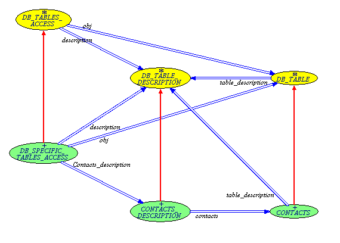
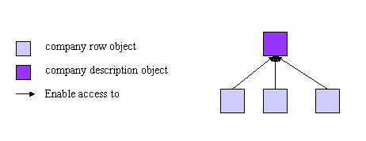
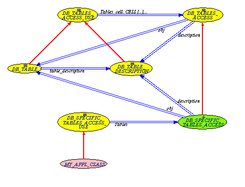
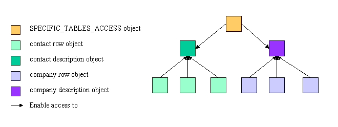

The EiffelStore library lets the user associate database elements with Eiffel objects. These database elements are basically database table rows, database view rows or more generally sets of database attribute values. The easiest way to manipulate database elements is to insert their content into Eiffel objects and to work on these Eiffel objects as database elements.
A first solution to implement this is to use some adaptable structures that will fit to any database element. This is done in EiffelStore through the DB_TUPLE class, which contains mainly an ARRAY [STRING] containing element attribute names and an ARRAY [ANY] containing element attribute values. This solution has one major drawback: any static checking is impossible: the developer cannot be sure at compile time of the nature of a DB_TUPLE, i.e. what it represents, and cannot know if attributes number, names and types are correct. To overcome this problem, a second solution is to use data structures that statically fits to the expected database element.
The major problem of this technique is that structures are static: one structure, so one class instead of one object, should be created for each database element. This problem is overcome by the EiffelStore wizard: the wizard automatically creates structures that fits to table or view rows specified by the wizard user. These structures can be fully customized by the user through a template system.
This document explains first how to create basic or customized data structures coupled with database data, second how to use efficiently these Eiffel objects with EiffelStore.
EiffelStore enables to create Eiffel classes that can store the content of database table rows or views. The table (or view) attributes are mapped into the class through class instance variables (i.e. attributes), which names and types correspond to table attributes names and types.
EiffelStore uses a template which gives the basic structure of the class to generate, a set of tags used in this template then enables to map table (or view) meta-data into the class.
Note: the meta-data that can be mapped into the class is not limited to attribute names and types. Take a look at the tags description.
The EiffelStore wizard uses this capability to automatically generate Eiffel data structures from templates.
Let us see first how to use EiffelStore data structures generation system and then what the wizard does.
This part describes the class creation in these 3 respects:
The wizard basically follows this sequence of steps:
It loads meta-data about the table or view
It parses the template to find the tags
It replaces each tag by the meta-data value corresponding to the tag
Let us take an example:
| template file extract | corresponding result file extract |
| attribute_count: <ACNT> | attribute_count: 5 |
This works for meta-data on the class or view. For meta-data on class (or view) attributes, a second tag type enables to specify text areas that are mapped to specific table (or view) attributes.
Let us take an example:
| template file extract | corresponding result file extract |
| <A:A:A> <AN:L>: <TN:U> </A> |
companyid: DOUBLE companyname: STRING |
Text contained in the tag 'A' is mapped to each table (or view) attribute and the resulting texts are concatenated. Let' us now see the details about each tag.
The available tags can be separated into 3 types:
Tags corresponding to table meta-data
Tags corresponding to attribute meta-data
Tags to enclose attribute meta-data
| Tag name | Tag description | Options | |
| Option name | Option description | ||
| <CN:?> | Table name | U | in uppercase |
| I | with initial capital | ||
| L | in lowercase | ||
| <ACNT> | Attribute count | N/A | |
| Tag name | Tag description | Options | |
| Option name | Option description | ||
| <AN:?> | Attribute name | U | in uppercase |
| I | with initial capital | ||
| L | in lowercase | ||
| <IT> | Attribute position in the table | N/A | |
| <TN:?> | Attribute type name | U | in uppercase |
| I | with initial capital | ||
| L | in lowercase | ||
| <TDV> | Attribute type default value | N/A | |
Note: Attribute tags are only valid within an enclosing tag.
The tag <A:?:?> </A> encloses text that will be mapped to attributes matching criteria. These criteria are specified by the tag options:
First option: attribute type criterion
| Option name | Option description |
| A | All attributes |
| I | INTEGER attributes |
| S | STRING attributes |
| D | DATE attributes |
| B | BOOLEAN attributes |
| C | CHARACTER attributes |
| F | DOUBLE attributes |
Second option: attribute position criterion
| Option name | Option description |
| A | All attributes |
| F | First attribute |
| I | Intermediate attributes |
| L | Last attribute |
Note: this option is generally used to have a valid and nice layout or indentation.
Note: several options can be selected for one criterion.
The mapping system described below can be extended to create a class that gathers meta-data on database tables. This class mapping is equivalent to the previous mapping but within a different scope:
class corresponds to the database rather than tables
class content deals with tables rather than table attributes
The meaning of available tags is so modified:
Note: every tag is not available for this mapping.
| Tag name | Tag description |
| <ACNT> | Table count |
| Tag name | Tag description | Options | |
| Option name | Option description | ||
| <CN:?> | Table name | U | in uppercase |
| I | with initial capital | ||
| L | in lowercase | ||
| <IT> | Table position in the database | N/A | |
The tag <A:A:?> </A> encloses text that will be mapped to tables matching a position criterion. This criterion is specified by the tag options:
| Option name | Option description |
| A | All tables |
| F | First table |
| I | Intermediate tables |
| L | Last table |
The data structure generation system is implemented with 4 EiffelStore classes:
DB_CLASS_GENERATOR abstractly generates a class mapped to database meta-data.
DB_TABLE_CLASS_GENERATOR generates a class mapped to a database table.
DB_ACCESS_CLASS_GENERATOR generates a class mapped to the database.
DB_TEMPLATE_TAGS defines available tags for mapping and their meaning.
Generation classes BON diagram
The EiffelStore wizard uses the EiffelStore generation system described in the section above.
It generates data structures as described in the next section. This part intent is not to describe the use of the data structures but merely to show what the wizard generates.
The wizard generates 3 types of classes:
For each selected database table, a class is created from the same template, mapping the database table. This template is:
indexing
description: "Class which allows EiffelStore to retrieve/store%
%the content of a table row from database table <CN:U>"
author: "EiffelStore Wizard"
date: "$Date$"
revision: "$Revision$"
class
<CN:U>
inherit
DB_TABLE
-- redefine
-- out
-- end
undefine
Tables,
is_valid_code
end
DB_SPECIFIC_TABLES_ACCESS_USE
create
make
feature -- Access
<A:A:A> <AN:L>: <TN:U>
</A> table_description: DB_TABLE_DESCRIPTION is
-- Description associated to the <CN:L>.
do
tables.<CN:L>_description.set_<CN:L> (Current)
Result := tables.<CN:L>_description
end
feature -- Initialization
set_default is
do
<A:A:A> <AN:L> := <TDV>
</A> end
feature -- Basic operations
<A:A:A> set_<AN:L> (a_<AN:L>: <TN:U>) is
do
<AN:L> := a_<AN:L>
end
</A>feature -- Output
--FIXME: add this out: STRING is
-- do
-- Result := ""
-- Result.append (myid.out + "%N")
-- end
end -- class CODESNote: the template content can be adjusted, for instance to add comments or change the indexing. However, the fundamental template structure should not be changed if data structures are used as described in the next section.
For each selected database table, a class is also created from the same template, mapping the database table. This template is:
indexing
description: "Description of class <CN:U>"
author: "EiffelStore Wizard"
date: "$Date$"
revision: "$Revision$"
class
<CN:U>_DESCRIPTION
inherit
DB_TABLE_DESCRIPTION
-- rename
-- Tables as Abstract_tables
undefine
Tables,
is_valid_code
end
DB_SPECIFIC_TABLES_ACCESS_USE
create
{DB_SPECIFIC_TABLES_ACCESS} make
feature -- Access
Table_name: STRING is "<CN:U>"
Table_code: INTEGER is <CI>
Attribute_number: INTEGER is <ACNT>
-- Number of attributes in the table.
Id_code: INTEGER is
-- Table ID attribute code.
do
Result := <IC>
end
<A:A:A> <AN:I>: INTEGER is <IT>
</A> attribute_code_list: ARRAYED_LIST [INTEGER] is
-- Feature code list
once
create Result.make
(Attribute_number)
<A:A:A> Result.extend (<AN:I>)
</A> end
description_list: ARRAYED_LIST [STRING] is
-- Feature name list. Can be interpreted as a list
-- or a hash-table.
once
create Result.make (Attribute_number)
<A:A:A> Result.extend ("<AN:I>")
</A> end
type_list: ARRAYED_LIST [INTEGER] is
-- Feature type list. Can be interpreted as a list
-- or a hash-table.
once
create Result.make (Attribute_number)
<A:A:A> Result.extend (<TN:I>_type)
</A> end
to_delete_fkey_from_table: HASH_TABLE [INTEGER, INTEGER] is
-- List of tables depending on this one and their
-- foreign key for this table.
-- Deletion on this table may imply deletions on
-- depending tables.
once
<DH> end
to_create_fkey_from_table: HASH_TABLE [INTEGER, INTEGER] is
-- List of associated necessary tables and the
-- linking foreign keys.
-- Creation on this table may imply creations on
-- associated necessary tables.
once
<CH> end
attribute (i: INTEGER): ANY is
-- Get feature value of feature whose code is 'i'.
do
inspect i
<A:A:A> when <AN:I> then
Result := <CN:L>.<AN:L>
</A> end
end
set_attribute (i: INTEGER; value: ANY) is
-- Set feature value of feature whose code is `i' to `value'.
-- `value' must be of type STRING, INTEGER, BOOLEAN, CHARACTER,
-- DOUBLE or DATE_TIME. References are made automatically from
-- expanded types.
local
integer_value: INTEGER_REF
double_value: DOUBLE_REF
boolean_value: BOOLEAN_REF
character_value: CHARACTER_REF
date_time_value: DATE_TIME
string_value: STRING
do
inspect i
<A:S:A> when <AN:I> then
string_value ?= value
<CN:L>.set_<AN:L> (string_value)
</A><A:F:A> when <AN:I> then
double_value ?= value
if double_value /= Void then
<CN:L>.set_<AN:L> (double_value.item)
else
<CN:L>.set_<AN:L> (0.0)
end
</A><A:I:A> when <AN:I> then
integer_value ?= value
if integer_value /= Void then
<CN:L>.set_<AN:L> (integer_value.item)
else
<CN:L>.set_<AN:L> (0)
end
</A><A:D:A> when <AN:I> then
date_time_value ?= value
<CN:L>.set_<AN:L> (date_time_value)
</A><A:C:A> when <AN:I> then
character_value ?= value
if character_value /= Void then
<CN:L>.set_<AN:L> (character_value.item)
else
<CN:L>.set_<AN:L> ('%U')
end
</A><A:B:A> when <AN:I> then
boolean_value ?= value
if boolean_value /= Void then
<CN:L>.set_<AN:L> (boolean_value.item)
else
<CN:L>.set_<AN:L> (False)
end
</A> end
end
feature {<CN:U>} -- Basic operations
set_<CN:L> (a_<CN:L>: <CN:U>) is
-- Associate the description to a piece of <CN:L>.
require
not_void: a_<CN:L> /= Void
do
<CN:L> := a_<CN:L>
ensure
<CN:L> = a_<CN:L>
end
feature {NONE} -- Implementation
<CN:L>: <CN:U>
-- Piece of <CN:L> associated with the description
end -- class CODES_DESCRIPTIONNote: the same remark applies for this template.
Some additional tags are directly replaced by the wizard:
The <CR> and <DR> tags are replaced with information on associated tables.
The <IC> tag is replaced by information on the primary key (table ID).
The <CI> tag is replaced by the table position in the database.
The DB_SPECIFIC_TABLES_ACCESS class is mapped to the database from the following template:
indexing
description: "Description of database tables.%
%Use this class through DB_SPECIFIC_TABLES_ACCESS_USE."
author: "EiffelStore Wizard"
date: "$Date$"
revision: "$Revision$"
class
DB_SPECIFIC_TABLES_ACCESS
inherit
DB_TABLES_ACCESS
creation
make
feature -- Access
<A:A:A> <CN:I>: INTEGER is <IT>
</A> Table_number: INTEGER is <ACNT>
code_list: ARRAYED_LIST [INTEGER] is
-- Table code list.
once
create Result.make (Table_number)
<A:A:A> Result.extend (<CN:I>)
</A> end
name_list: ARRAYED_LIST [STRING] is
-- Table name list. Can be interpreted as a list
-- or a hash-table.
once
create Result.make (Table_number)
<A:A:A> Result.extend ("<CN:I>")
</A> end
obj (i: INTEGER): DB_TABLE is
-- Return instance of table with code `i'.
do
inspect i
<A:A:A> when <CN:I> then
create {<CN:U>} Result.make
</A> end
end
description (i: INTEGER): DB_TABLE_DESCRIPTION is
-- Return description of table with code `i'.
do
inspect i
<A:A:A> when <CN:I> then
Result := <CN:L>_description
</A> end
end
<A:A:A> <CN:L>_description: <CN:U>_DESCRIPTION is
-- Unique description of table `<CN:U>'.
once
create Result.make
end
</A>
end -- class DB_SPECIFIC_TABLES_ACCESS
EiffelStore enables to create Eiffel classes that can store the content of database table rows or views. The table (or view) attributes are mapped into the class through class instance variables (i.e. attributes), which names and types correspond to table attributes names and types.
EiffelStore places the generated classes in a context that facilitates their use.
Each generated class inherits from a general class. These general classes afford facilities for generated classes that are not specific to the generation. Furthermore, they provide a polymorphic type that lets handle the generated class objects without checking their type at compile-time. Hence non-specific applications or libraries can handle these objects (See for instance the DataView cluster).
Let us see general and generated classes relationships:

General and generated classes relationships
Yellow classes are general.
Green classes are generated.
This BON diagram points out the 3 types of generated classes:
Classes holding database table rows content (inheriting from DB_TABLE)
Classes describing database tables (inheriting from DB_TABLE_DESCRIPTION)
A class describing the database and giving access to the previous types of classes (inheriting from DB_TABLES_ACCESS)
One database table is associated to one table class and one description class. Both classes are closely interrelated to provide what the developer need. The table access classes describe the database tables and gives access to both table and description classes.
Table classes are specific to one database table and enable to store table rows attribute values. Their objects can be considered as database table rows. These classes inherit from DB_TABLE so that the type of objects can be determined at runtime, which can be interesting for GUI applications for instance.
Each of these classes are associated to a description class.
The descriptions goal is 3-fold:
Getting meta-data about the table represented at run-time.
Getting table rows data dynamically.
Note: these descriptions inherit from DB_TABLE_DESCRIPTION.
Since they only describes a table and provide tools, description objects can be unique. EiffelStore ensures their unicity for resources optimization.
Each table class is associated to the description class corresponding to the same database table.
A table class object provides the associated table description:
row: DB_TABLE
description: DB_TABLE_DESCRIPTION
...
row := db_manager.database_result
description := row.table_description

table and description objects relationship
Meta-data about a table is available dynamically from an object that conforms to DB_TABLE or DB_TABLE_DESCRIPTION classes:
row: DB_TABLE
description: DB_TABLE_DESCRIPTION
...
row := db_manager.database_result
description := row.table_description
io.putstring ("Table name is " + description.Table_name)
Table row data is stored in the table object. 2 ways coexist to access the data:
Use the table row object: if you want to check type at compile-time.
Use the table description object: if you want to round the static type checking system.
This is rather simple, access directly the class instance variables:
row: CONTACTS
...
io.putstring ("Contact row ID: ")
io.putstring (row.contactid.out)
You first have to link the description object to your table object. Then you can use DB_TABLE_DESCRIPTION features:
row: DB_TABLE
description: DB_TABLE_DESCRIPTION
...
-- Link description unique object to `row' content.
description := row.table_description
io.putstring (description.attribute (description.id_name) + ": ")
io.putstring (description.attribute (description.id_code).out)
Note: This example and the previous one perform the same output, but the second one does not require to know that the object is a contact at compile time.
Caution: Don't forget to link a description to a table row object before accessing table row content! This problem can be avoided if you always access description from the table row object rather than the tables access class (DB_SPECIFIC_TABLES_ACCESS).
DB_TABLE_DESCRIPTION provides facilities to manage data retrieved from a table row.
You can do for instance:
row: DB_TABLE
description: DB_TABLE_DESCRIPTION
...
row := db_manager.database_result
-- Link description unique object to `row' content.
description := row.table_description
my_screen_report.fill (description.printable_attribute_list)
Table access classes provide facilities to manage table row and table description objects. They also give basic database table meta-data.
The following figure shows table access classes and their relations.
Yellow classes are EiffelStore classes
Green class is generated
Pink class is an application class

Table access classes BON diagram

Relationship between the tables access object, description and table objects
The DB_SPECIFIC_TABLES_ACCESS class stores the unique table description object. It also provides the following facilities:
Every database table code
Table descriptions from a table code
Sample table class objects from a table code
Table names from a table code
Note: database table codes given in the class match the table codes provided by DB_TABLE_DESCRIPTION.
The DB_TABLES_ACCESS class provides an interface for the DB_SPECIFIC_TABLES_ACCESS class which is non-specific to the database. This can be used by non database-specific code (for instance the DataView cluster) to access database tables.
Unique table description objects and table codes are of course not directly available from this class, but the following features are still available:
Table descriptions from a table code
Sample table class objects from a table code
Table names from a table code
The DB_SPECIFIC_TABLES_ACCESS object can be accessed as a kind of "global variable" by any class which inherits from DB_SPECIFIC_TABLES_ACCESS_USE. This class also ensures DB_SPECIFIC_TABLES_ACCESS object unicity.
The DB_TABLES_ACCESS_USE class affords the same possibility but with no reference to the DB_SPECIFIC_TABLES_ACCESS object. The unique DB_SPECIFIC_TABLES_ACCESS should be set to this class as of type DB_TABLES_ACCESS.